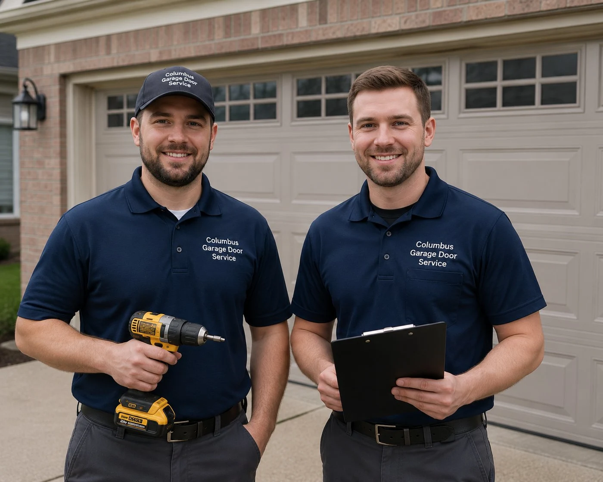
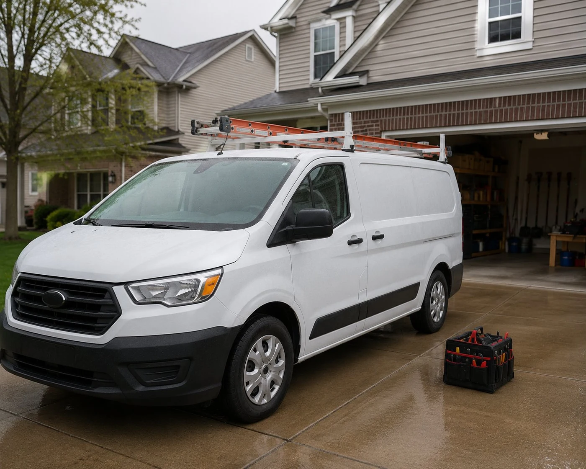
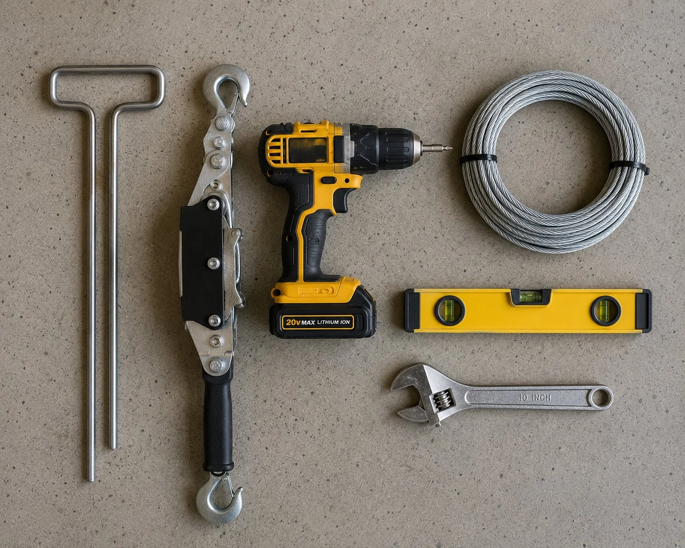

Garage door repair and installation across Columbus and Franklin County. Same-day service, written quotes, no trip charge, no surprises.
(740) 527-8686Who we are
We run garage door repair and installation calls across Columbus and all surrounding Franklin County suburbs — Dublin, Westerville, Hilliard, Grove City, Gahanna, Upper Arlington, Reynoldsburg, Lewis Center, and everywhere in between.
The way we operate is simple: we show up when we say we will, diagnose the problem honestly, tell you what it costs in writing before we start, and do the work. No trip charge, no inflated parts markups, no emergency surcharge for calls that happen at inconvenient hours. The price is the price.
We've been running calls across this area long enough to know the housing patterns — which neighborhoods are aging out their original springs, which subdivisions have non-standard opening heights, where the older extension-spring systems are still in service. That local knowledge means we usually show up with the right parts and get the job done in one visit.

How we work
Every service call works the same way. We arrive, look at the door and hardware, and tell you exactly what's wrong and what it costs to fix. You approve the quote or you don't — either way, you owe us nothing for the diagnosis. If you approve it, we do the work, run a full system check, and leave the door working correctly.
We don't upsell, we don't find phantom problems, and we don't push new doors on people who just need a spring. If a repair is the right call, we say so. If replacement makes more financial sense, we explain why and let you decide.
"The repair vs. replace question is something we take seriously. We've been on calls where another company had already told the homeowner they needed a full door replacement when the door was structurally fine and needed a spring. We've also been on calls where someone had been repairing a door for years that should have been replaced after the first panel damage. The honest answer isn't always the easy one to give, but it's the one we give."

What we do
Torsion and extension springs. Most common repair call we run.
Learn more →All major brands. Most problems repairable without replacement.
Learn more →Nights and weekends, same price as regular service.
Learn more →When repair doesn't make sense — full replacement installed.
Learn more →